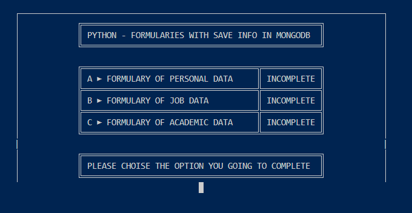
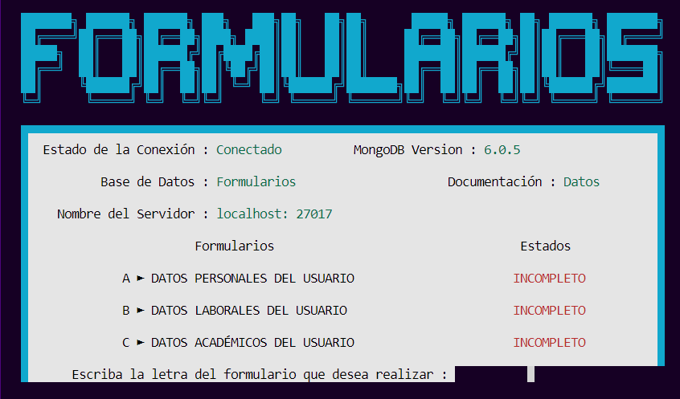

¡Hola! Mi nombre es Lucas Ezequiel Sanchez estoy en busca de mi primer empleo IT e interesado en
desarrollar mi carrera
profesional en el área de sistemas como Desarrollador. Mi pasión por la tecnología me lleva a
buscar información
en internet para llevar a cabo mi crecimiento en el sector.
Estoy entusiasmado por tener la oportunidad de salir del área de confort y aprender sobre el entorno de
trabajo IT junto
a profesionales experimentados en el campo de la informática, para aprender nuevas habilidades y poner
en práctica mis
conocimientos actuales en proyectos interesantes, desafiantes.
Soy una persona entusiasta, dispuesta a aprender y a ofrecer el mejor desempeño posible para adaptarme a
las necesidades
del trabajo. Aunque no lleve experiencia laboral previa, estoy totalmente dispuesto a aprender, entregar
mi tiempo y
atención para desarrollarme como persona y profesional.
Programación
-

HTML -

CSS - FLEX -

PYTHON -

SQL
Bases de Datos


Conocimientos Técnicos
- Armado de Set ups, limpieza y mantenimiento de Gabinetes.
- Instalación de Hardware, Software, Sistemas Operativos desde Booteo y Periféricos.
- Muy Básico sobre redes (Windows servers y Active Directory)
- Conocimiento en programas de ofimática.
- Word
- Excel(básico)
- Powerpoint
Estudios Académicos
Universidad de San Martín (UNSAM)
Carrera: Técnico Universitario en Programación
Nombre del Título: -
Año de ingreso
2024
Año de Egreso
En progreso
Escuela Técnica N.º 21 DE 10 "Fragata Escuela Libertad"
Carrera: Técnico en Computación
Nombre del Título: Técnico en Informática Profesional y Personal en Programación
Año de ingreso
2017
Año de Egreso
2019
Proyectos Personales
| Python
Ambos proyectos personales han sido diseñados con la capacidad de conectarse a una base de datos noSQL, específicamente MongoDB, para el almacenamiento de datos. Estas aplicaciones son de tipo consola y han sido desarrolladas utilizando él lenguaje de programación Python, lo que les permite ejecutarse en la terminal del sistema Operativo Windows. |
Calculadora CMD |
Antes
- Proporciona mensajes de errores en cada situación del programa cuando no se brinda una
respuesta correctamente. Después
Nuevas Funcionalidades añadidas |
Formularios CMD |
Antes
- Menú con 3 formularios a completar que se presentan como incompletos y al completarlos
Cambia su estado. Después
Nuevas Funcionalidades añadidas |
HTML & CSS | Curriculum WEB |
En este proyecto web mi intención es implementar los conocimientos que voy adquiriendo sobre HTML y CSS (Flex) y se me ocurrió hacer este curriculum web para poder facilitar la información de un PDF directamente a la WEB; sin embargo, de todas formas dejo a disposición para descargar PFD de mi CV |
|---|